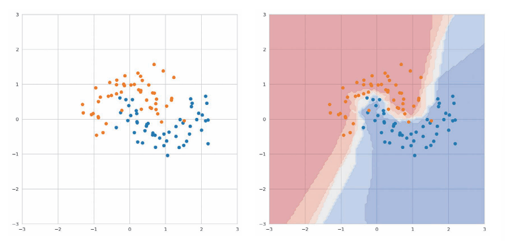
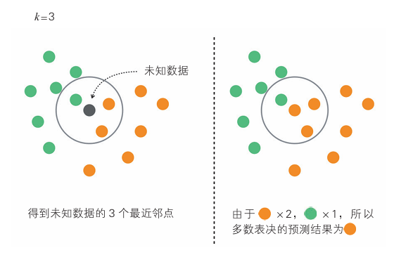
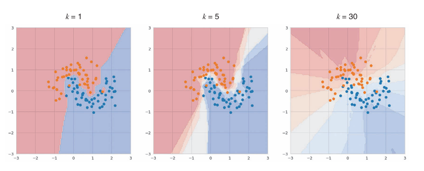

KNN#
概述#
KNN独特于它只是机械地记住所有数据。
KNN不用进行训练和预测的复杂过程。或者说在训练过程无计算，在预测过程中计算。
在分类未知数据时，KNN将计算未知数据与训练数据的距离，通过多数表决找到最邻近的\(k\)个点，然后进行分类。
其虽然简单，但能适用于具有复杂边界的数据，如图。

右图中，散点图中所有点被分为两个标签，分类结果表示为热图。
最近邻点的数量k设置为5，给出一个预测数据，找到这个预测数据在输入数据中最近的5个点判断。
图中每个坐标的颜色表示k个最近邻标签的占比。
暗红色区域表示k个点的标签是橙色的，随着比例接近1：1，颜色会变浅，接近于蓝色。
算法说明#
KNN算法步骤如下：
计算输入数据与训练数据之间的距离。
得到距离输入数据最近的k个训练数据。
对训练数据的标签进行多数表决，将结果作为分类结果。

如图，图中 设置的最近邻点k的数量为3。最近邻点k的数量是一个超参数，在二元分类时，通常取为奇数，便于多数表决。
示例代码#
样本数据呈曲线分布，最近邻点k的数量采用默认值5.
from sklearn.neighbors import KNeighborsClassifier
from sklearn.datasets import make_moons
from sklearn.model_selection import train_test_split
from sklearn.metrics import accuracy_score
# 生成数据
X, y = make_moons(noise=0.3)
X_train, X_test, y_train, y_test = train_test_split(X, y, test_size=0.3)
model = KNeighborsClassifier()
model.fit(X_train, y_train) # 训练
y_pred = model.predict(X_test)
accuracy_score(y_pred, y_test) # 评估
详细说明#
决策边界因k值而异#
改变k值后识别出的决策边界会如何变化？

图中从左到右分别为 k=1、5、30。
k=1时出现了像飞地一样的决策边界，说明发生了过拟合。过少的k值可能会使模型非常敏感于训练数据中的噪声和异常值。
k=5时边界变得平滑，相比于 k=1明显好转。
而k=30时，在橙色区域夹杂了许多蓝色的点，说明边界过于宽松导致 错误的判断。它会更多地依赖于全局模式而非局部数据。这样，模型可能无法捕捉到数据中的细节和复杂性
以上说明k值十分重要，需要调优得到最佳的k值。
注意点#
数据量较小或维度较小时，KNN效果很好。但是一旦数据量较大或维度较大，KNN需要在大量训练数据进行近邻搜索以找到最近的点。需要大量存储容量来存储数据。因此不适合 KNN。
对于高维数据，KNN也无法很好学习。KNN起作用的前提是“只要拥有的训练数据多，就能在未知数据的附近发现训练数据”这一假设。这个假设叫作渐近假设，但对于高维数据来说，这个假设不一定成立。